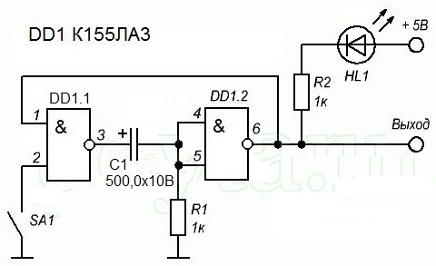
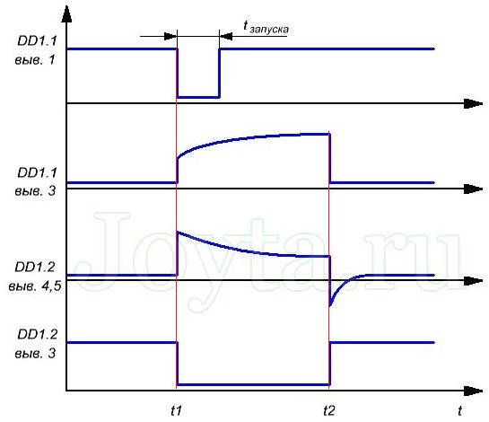

Исследование работы одновибратора на логических элементах
Одновибратор - генератор, вырабатывающий одиночные электрические импульсы. Алгоритм работы одновибратора таков: при поступлении на вход одновибратора электрического сигнала, схема выдает на выходе короткий импульс, продолжительность которого определяется номиналами RC цепи.
После окончания формирования выходного импульса, одновибратор вновь возвращается в свое первоначальное состояние, и процесс повторяется при поступлении нового сигнала на его входе. Поэтому данный одновибратор еще именуют ждущим мультивибратором.
На практике применяется множество разновидностей одновибраторов, таких как одновибратор на транзисторах, операционных усилителях и одновибратор на логических элементах.

Рис. 1 - Схема одновибратора на микросхеме К155ЛА3
Одновибратор (рис. 1) состоит из двух логических элементов микросхемы К155ЛА3: первый из них применен в роли 2И-НЕ элемента, второй подключен как инвертор. Подача входного сигнала осуществляется посредством кнопки SA1. Кнопка в данной схеме применяется только в качестве имитации входного сигнала. В действующих же устройствах на данный вход обычно поступает сигнал с каких-либо узлов схемы.
Для наглядности работы одновибратора, к его выходу можно подключить светодиод через токоограничивающий резистор. Чтобы видеть свечение светодиода, нужно чтобы выходной импульс был достаточно продолжительный, поэтому выберем конденсатор емкостью 500 мкф.
Подадим питание и замерим стрелочным вольтметром напряжение на выводах логических элементов DD1.1 и DD1.2 микросхемы К155ЛА3. На выходе логического элемента DD1.1 микросхемы К155ЛА3 должен быть логический ноль (не более 0,4 вольта) и единица (более 2,4 вольта) на его входе 2. Так же на выходе 6 логического элемента DD1.2 будет единица и соответственно единица на выводе 1 на DD1.1.
Подключив вольтметр к выводу 6 логического элемента DD1.2 , как уже было сказано до этого, на нем лог. 1. Теперь нажмем кратковременно кнопку SA1. Стрелка вольтметра резко отойдет практически до нуля. Примерно через 1-2 секунды она опять стремительно примет исходное положение. По такому движению стрелки можно сделать вывод, что мы наблюдали сигнал низкого уровня.
Одновременно с этим процессом загорится и светодиод, подсказывая нам, что на выходе одновибратора появился одиночный импульс высокого уровня. Если параллельно конденсатору С1 подключить конденсатор такой же емкости, то мы заметим, что продолжительность импульса возросла вдвое. Так же изменяя сопротивление резистора R1 можно добиться изменения длительности импульса.
Подведем итог: Чем выше емкость конденсатора C1 и сопротивление R1, тем продолжительнее выходной импульс вырабатываемый одновибратором на К155ЛА3.
В данной схеме одновибратора сопротивление R1 и емкость Cl представляют собой времязадающую RC цепь. При малых значениях C1 и R1 длительность импульса будет настолько короткой, что визуально обнаружить его с помощью вольтметра или светодиода не реально. В этом случае наличие импульса можно зафиксировать с помощью осциллографа или логического пробника.

Рис. 2 - Диаграмма работы одновибратора на микросхеме К155ЛА3
В ждущем состоянии вывод 2 микросхемы К155ЛА3 никуда не подсоединен, поскольку контакты SA1 еще незамкнуты. По сути, на входе находится единица. Зачастую вход в таком случае соединяют с плюсом питания через сопротивление 1 кОм.
Из-за подключенного сопротивления R1, на входе логического элемента DD1.2 находится лог. 0, а на его выходе лог. 1. Поскольку на обоих выводах конденсатора лог. 0, он полностью разряжен.
В момент нажатия SA1, на вход 2 логического элемента DD1.1 поступает электрический сигнал низкого уровня. Поэтому на выводе 3 логического элемента DD1.1 единица. Положительный фронт через C1 подается на вход DD1.2. Соответственно с выхода его логический 0 поступит на вход DD1.1 и он будет присутствовать там даже после отпускания кнопки.
Одновременно через резистор происходит заряд конденсатора. И по окончании заряда напряжение на резисторе упадет и это переведет выход элемента DD1.2 в лог. 1. Одновибратор вернется в исходное состояние — в ждущий режим.
Следует заметить, то входной сигнал (нажатие кнопки) должен быть меньше по продолжительности, чем выходной иначе выходных импульсов не будет.
Источники
joyta.ru - Мультивибратор на двух элементах микросхемы К155ЛА3
Никулин С.А., Повный А.В. Энциклопедия начинающего радиолюбителя